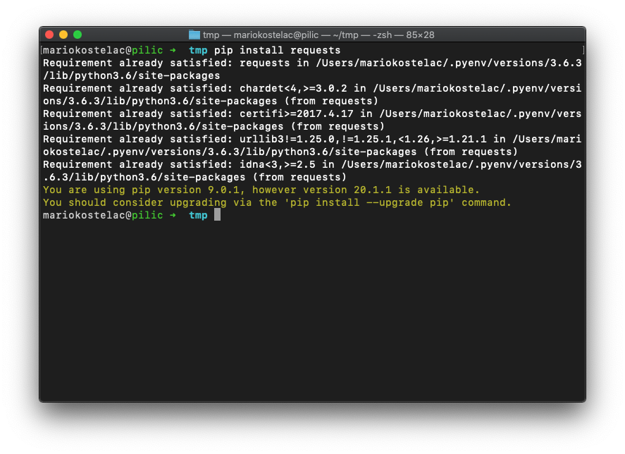
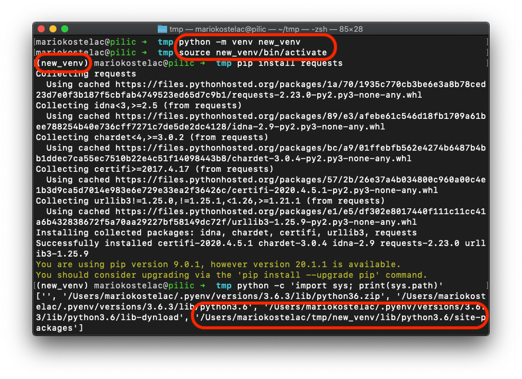
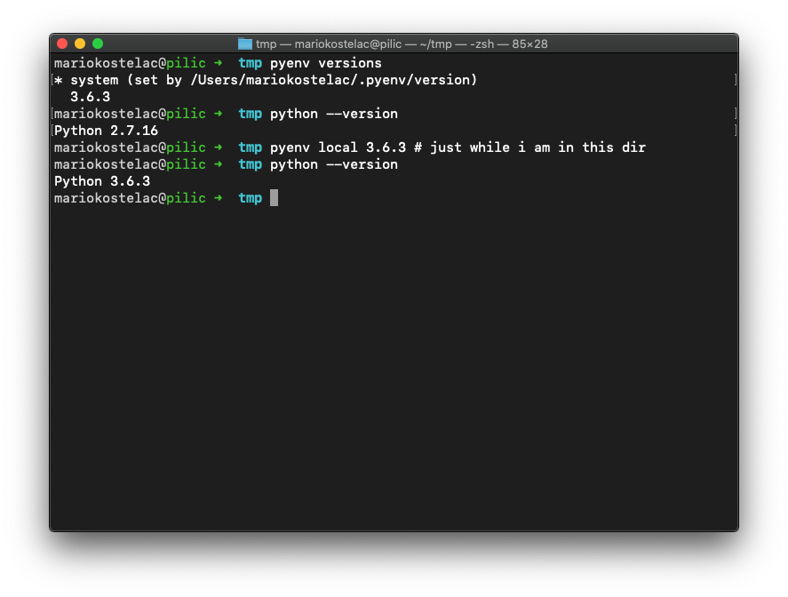
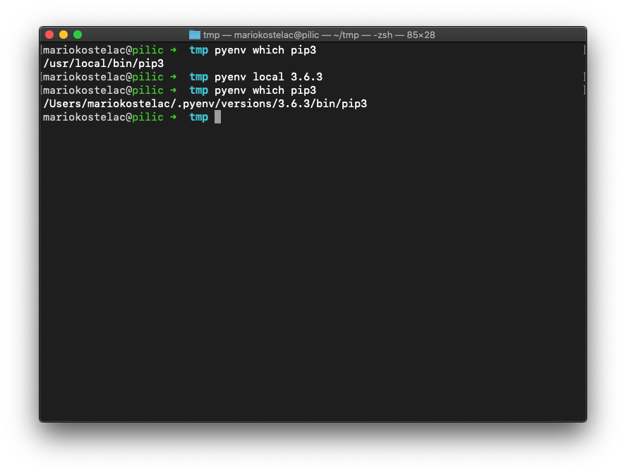
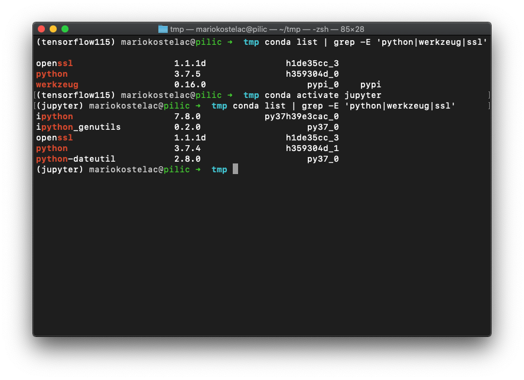
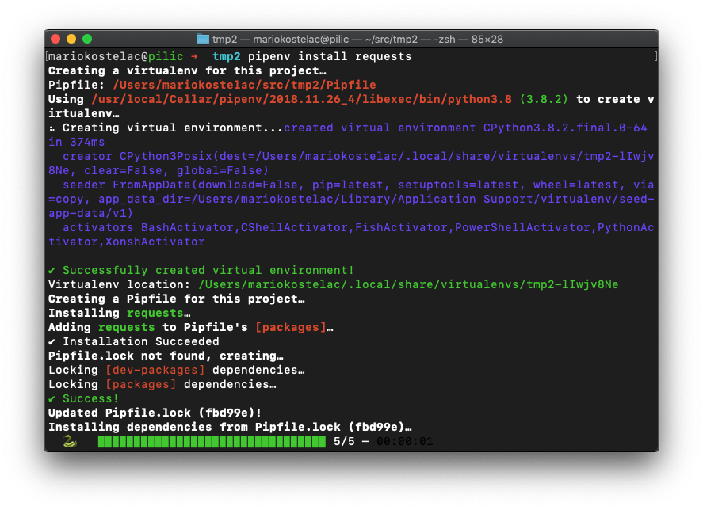
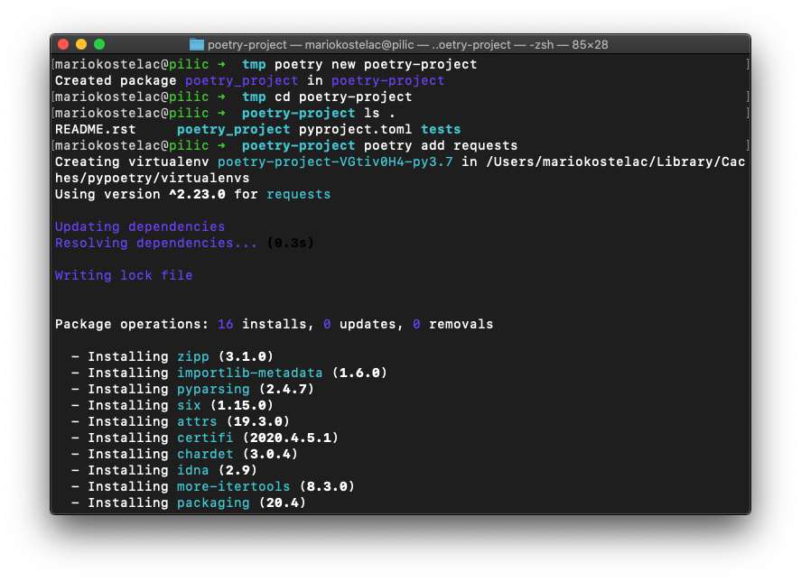
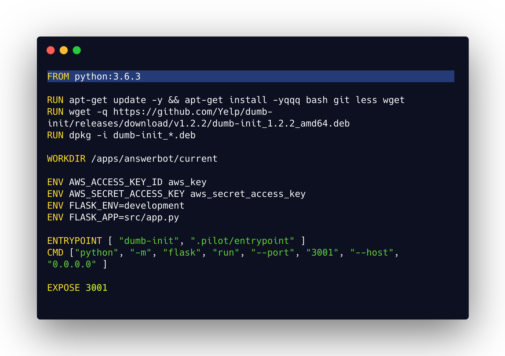

python依赖性管理工具概述[译]
一直分不清管理依赖的工具之间的区别？Pip, venv, Docker, conda, virtualenvwrapper, pipenv, …不知道用哪一个？为什么有这么多不同的工具？它们之间兼容吗？
Python在依赖项管理这方面很糟糕，但是一旦你理解了这些工具及其存在的原因，就会更容易地选择你最想要的工具，即使您不能在其他环境中选择您最喜欢的，也可以选择最适合的。
我将简要介绍每个工具，创建原因以及要解决的问题。在文章的最后，您可以找到一个表格，其中汇总了所有信息以及人们使用的常用设置。
跳转： pip | venv | pyenv | conda | pipenv | poetry | Docker.
比较所有解决方案 | 常规设置
Pip
Pip（package installer for python，python的软件包安装程序）是python领域中最基本的软件包安装程序。 大多数python安装程序中都预先安装了该软件，因此您可能不必自己安装它。
安装软件包就像运行pip install torch一样简单。 该命令与PyPI（The Python Package Index，Python包索引）进行通信，下载并安装软件包，使它在当前的python环境下可用。
这是一个非常原始的工具。它对不同的python版本或Jupyter内核一无所知。

Pip解决的问题：
- 安装python包
Venv
venv是用于创建轻量级虚拟环境的工具。
最常见的用例是为每个应用程序创建环境。它可以确保应用程序之间不会共享软件包，也不会与系统的python安装共享软件包。每个环境都可以使用同一软件包的任何版本，并且它们不会冲突。

venv解决的问题：
- 在应用之间隔离包
venv和pip如何交互？
它们都是标准python工具的一部分，可以解决非常不同的问题，并且可以很好地协同工作。鼓励您使用pip在虚拟环境中安装软件包。
pyenv
Python成为一种流行的语言，所有主要的操作系统都开始在它之上构建并将其捆绑在一起。这就是为什么您可以直接python在新安装的Linux或Mac OS上键入终端而无需自己安装终端的原因。
但是用户应用程序也是用python构建的。而且他们通常需要不同版本的python！结合使用这两种方法，需要根据应用程序以某种方式运行不同版本的python。
创建Pyenv是为了解决在同一台计算机上安装和切换不同版本的python的问题。
这是开发人员机器上的便捷工具，因为它保留了python的系统版本（需要OS才能正常运行），但是可以为不同的应用程序安装和切换不同版本（基于当前路径，用户等）。
这是在系统版本和3.6.3之间切换的示例。运行pyenv local 3.6.3会记住下次您导航到该目录时激活3.6.3版。

pyenv解决的问题：
- 安装不同的python版本
- 在不同的上下文中使用不同的python版本
pyenv和pip如何交互？
Pyenv和pip相辅相成。您可以将pyenv视为pip的容器/外壳。无论pyenv设置为什么，Pip都会为当前python版本安装软件包。实际上，来自两个环境的pip命令是不同的二进制文件，它们互不影响。

Conda
你可能在Anaconda或miniconda知道这个工具
一旦科学界开始认真使用python，Python领域对软件包管理工具的需求就会增加。更具体地说，对于某些纯粹的计算工作负载，python变得太慢了，因此诞生了numpy和scipy。这些库不是真正用python编写的。它们是用C语言编写的，只是包装为python库。
编译此类库带来了一系列挑战，因为必须（或多或少）将它们编译在您的计算机上才能获得最佳性能，并与glibc之类的库正确链接。
Conda是作为用于管理科学界的python环境的多合一解决方案而引入的。
它采取了不同的方法。与在机器上使用脆弱的编译库过程不同，库是预编译的，并在您请求它们时才下载。不足的是，该解决方案附带了一个警告-conda不使用PyPI（Python包的最受欢迎索引）。
Conda拥有自己的带有多个渠道的包装指数（anaconda渠道由conda的创建者维护，并且是最可靠的渠道）。Anaconda频道不如PyPI完整，并且两个地方都存在的软件包通常比PyPI落后几个版本。其他渠道更新软件包的速度更快，但我强烈建议检查谁维护各自的软件包（通常不是库作者！）。

总之，Conda正在解决以下问题：
- 管理不同的python版本
- 管理不同的环境
- 安装python包
- 编译和安装非python软件包（请考虑使用OpenSSL，CUDA驱动程序等）
什么是anaconda 和miniconda？
Anaconda和miniconda是conda工具的不同发行版。Miniconda的目标是一切从简，它仅安装了python和conda工具。而Anaconda将安装额外的160多个软件包，这些软件包经常在数据科学工作流程中使用。
如果要严格控制运行的环境，建议安装miniconda并使用自底向上的方法构建环境。
conda如何与pip和其他工具互动
Conda是一个非常强大的工具，它解决了许多问题，因此经常在某些方面与其他工具发生冲突。虽然conda与其他工具（例如，使用pipenv）可以一起工作，但是需要对这两个工具（python软件包加载）有更深入的了解，而且并不经常这样使用。
我发现有两种可靠的conda设置：
- Conda作为多合一解决方案
- Conda用于环境管理并为Python软件包安装二进制软件包+ pip（conda + pip的最佳做法）
Pipenv
Pipenv是由热门请求包的作者创建的一套开发工作流程工具。除了使普通的工作流更加流畅并根据需求管理文件（Pipfile）之外，pipenv还解决了以下问题：
- 管理不同的python版本（通过pyenv，如果已安装）
- 管理不同的环境
- 安装python包
- 环境再现性
它从PyPI加载程序包，因此不会遇到与Conda相同的问题。
Pipenv是第一个提出认真解决环境可再现性问题的工具。保存conda环境（environment.yml）和pip / venv（requirements.txt）的标准方法解决了部分问题：它们包含您已安装的版本化软件包，但不包含其依赖项的版本。这就为包括安全问题在内的几类错误留出了空间。

Pipenv通过维护Pipfile.lock文件来密封软件包版本，该文件包含虚拟环境中使用的所有软件包的特定版本。
pipenv如何与pip和其他工具一起使用？
Pipenv是pip和其他几种工具的不错的包装，这意味着它与pip可以很好地交互。如果您使用pipenv install <package>而不是pip install <package>，则可以节省一些手动步骤（更改Pipfile和Pipfile.lock）。
Poetry
Poetry“简化了python包装和依赖管理”。Poetry与Pipenv最相似，并且它们经常争夺用户。诗歌要解决的主要问题是：
- 管理不同的环境
- 安装python包
- 环境再现性
- 打包和发布python包
您可以看到它与Pipenv没什么不同。建议与pyenv一起使用。完成此操作后，它可以解决pipenv遇到的所有问题，而且还有助于创建python软件包并将其发布到PyPI。

Poetry如何与其他工具互动？
Poetry是pyenv的补充，它们共同构成了用于管理工作流的完整解决方案。与pipenv相同，它使用PyPI来安装软件包，因此一旦开始使用Poetry就无需使用pip。
Pipenv 还是 poetry？
不止你一个人想知道为什么会有两个非常相似的工具。主要的技术差异是它们解析软件包的方式。这实际上是一个非常棘手的问题，而poetry在这一方面更胜一筹。当您安装新软件包时，它将更快地弄清它到底需要做什么，并且将更优雅地处理复杂的依赖关系图。
我的建议是，如果有人尚未针对您正在研究的项目做一个，那就选择其中任一个。
Docker
Docker与python依赖管理无关，但是人们经常在相同的上下文中谈论它，因此绝对值得探索它的作用。
Docker是用于创建，运行和管理容器的工具。您可以将容器视为非常轻量级的虚拟机。没有虚拟化，但是它们与操作系统的其他部分是完全隔离的。它为打包生产软件的通用解决方案而被创建，并且以可复制、隔离的方式在云端中运行。
您可以运行我在Docker容器中介绍过的任何工具。Docker的优点在于，它给您提供的隔离避免了一些问题。例如，常规的设置是您在不同的容器中运行每个应用程序。这意味着您可以在其中安装不同的python版本，并且它们彼此之间不会影响。此外，由于应用程序是设计隔离的，因此无需任何虚拟环境管理。
Docker是一项伟大的创新，它发生在我们在生产环境中运行软件的方式上，但是我不建议将其作为开发机上python依赖管理问题的解决方案。
在将Docker用于开发环境时，人们会遇到很多问题：
- 在Windows和Mac OS上，其性能明显下降
- 除了基本的conda / pipenv / poetry命令之外，还有很多东西要学习
- 在Docker容器中设置IDE以发现和调试应用程序依赖项通常并非易事，这使开发更加困难
- 安装与基础系统深度链接的库（例如CUDA驱动程序）可能会变得非常棘手

比较所有解决方案
| 安装python包 | 安装非python软件包 | 管理python版本 | 管理虚拟环境 | 环境再现性 | |
|---|---|---|---|---|---|
| Pip | ✅ | ✖ * | |||
| venv | ✅ | ||||
| pyenv | ✅ | ||||
| conda | ✅ | ✅ | ✅* | ✅ | |
| pipenv（+ pyenv） | ✅ | ✅ | ✅ | ✅ | |
| poetry（+ pyenv） | ✅ | ✅ | ✅ | ✅ | |
| Docker | * | * | * | * | ✅ |
*Pip：pip无法处理非Python软件包的安装，但是pip wheel消除了在大多数体系结构上大多数库在本地编译软件包的需要
Conda：即使conda可以安装非python软件包，它也不能完全替换您的系统软件包管理器（yum，apt-get）。在EC2之类的平台上运行软件仍将需要在conda之外安装一些软件包。
Docker：由于Docker非常不了解Python，因此您需要在容器内使用其他工具来完成这些工作。
常规设置
Pipenv（+ pyenv）
易于学习，出色的设置可用于管理依赖关系管理中的所有主要问题。强烈推荐。每当我建立一个新项目时，我都会使用它。
Poetry（+ pyenv）
与pipenv一样，它带来了很多好处，并且没有重大缺点。
Conda
有些人仅使用conda。此设置的主要问题是，某些库在conda通道中不可用，因此您必须求助于使用conda + pip。
Conda + pip
通用设置，使用conda进行python版本管理，虚拟环境管理以及安装二进制依赖项。用于安装python软件包的Pip。不幸的是，我提到它有其自身的问题，conda通常是一个非常庞大的工具。
经常使用它是因为conda通过nb_conda_kernels扩展与Jupyter集成得很好。每当必须在其他人设置的环境（例如SageMaker）中使用conda时，我都会使用它。
Pyenv + pip + venv
轻量级的设置来管理不同的python版本和虚拟环境。缺乏用于环境可再现性的解决方案，这对于可靠的生产操作是一个问题。